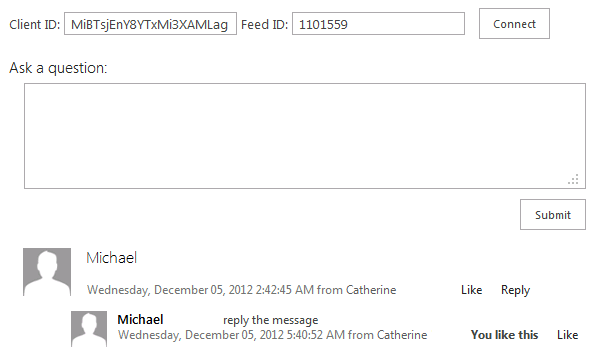

Summary: Learn how to integrate a app for SharePoint with Yammer.
Last modified: May 30, 2014
In this article
Description of the sample
Prerequisites
Sample for demo only: deviations from best practices
Key components of the sample
Configure the sample
Build, deploy, and run the sample
Troubleshooting
Change log
Related content
Description of the sample
Provided by: Todd Baginski, Canviz Consulting
This sample provider-hosted app for SharePoint shows how to integrate SharePoint 2013 with Yammer. For this sample to work, first you have to register a Yammer app at Yammer and obtain a Yammer app client ID. Then you have to create an internal Yammer group and obtain the feed ID for the group.
The default.aspx page of the app for SharePoint appears after you install and launch the app. After you input your client ID and feed ID, you will be able to perform the following Yammer operations in the app for SharePoint:
-
List the feed for a Yammer group.
-
Post a message to a Yammer group.
-
Reply to a message in a Yammer group..
-
Like a message in a Yammer group.
The default.aspx page of the app for SharePoint appears after you install and launch the app, as shown in Figure 1.

Prerequisites
This sample requires the following:
-
An Office 365 Developer Site
-
Visual Studio 2012 and Office Developer Tools for Visual Studio 2012 installed on your development computer
-
A Microsoft Azure account with permissions to deploy a website
-
Microsoft Azure SDK 1.8 for .NET
-
A Yammer account. You also have to create an internal Yammer group and obtain the feed ID for the group.
Sample for demo only: deviations from best practices
The sample's focus is to demonstrate how to integrate with Yammer from a provider-hosted app for SharePoint. It does not conform to all the best practices that you should use in a production app. Especially, be aware of the following:
-
The app has no exception handling.
Key components of the sample
The sample app contains the following:
-
The IntegratewithYammer project, which contains:
-
The AppManifest.xml file, which registers the provider-hosted application with SharePoint.
-
-
The IntegratewithYammerWeb project, which contains:
-
The Pages\Default.aspx file, which is the default page of the app for SharePoint . In this page, you provide the Yammer Client ID that you registered with Yammer and the Yammer Feed ID.
-
Configure the sample
Follow these steps to configure the sample:
-
Open the IntegratewithYammer.sln file in Visual Studio 2012.
-
In the Properties pane, change the Site URL property to be the absolute URL of your SharePoint test site collection on Office 365. For example, https://MyTenant.sharepoint.com/sites/dev.
-
-
Get a Yammer Client ID:
-
Log into Yammer, then navigate to http://code.msdn.microsoft.com/SharePoint-2013-Integrate-8756e638/https://www.yammer.com/client_applications/ to register a new app.
-
-
Get a Yammer Feed ID:
-
To obtain the Feed ID, first log into Yammer. Then navigate to the Yammer group that you created. You will see the feedId in the URL, as shown in Figure 2.
Figure 2. Locating the Feed ID in the URL

-
Build, deploy, and run the sample
Follow these procedures to build, deploy, and run the sample.
To build and deploy the IntegratewithYammerWeb website
-
Create an empty website on Microsoft Azure and download the publishing profile for that site.
-
Register an app at the /_layouts/15/appregnew.aspx page of your SharePoint test site collection on Office 365. For example, https://MyTenant.sharepoint.com/sites/dev/_layouts/15/appregnew.aspx. Be sure to fill in the following details:
-
Generate a client ID and a client secret. You'll need these values later for the web.config file.
-
For App Domain, enter the URL of the website that you created on Microsoft Azure.
-
Leave the Redirect URI field empty.
-
-
Open the web.config file. In the appSettings section, fill in the Client ID and the client secret values that you created when you registered the app.
-
In Solution Explorer, right-click the IntegratewithYammerWeb project, and then choose Publishing.
-
Follow the instructions to import the publishing profile of your Microsoft Azure site, and publish the website to Microsoft Azure.
To build and deploy the app for SharePoint
-
In Solution Explorer, right-click the IntegratewithYammer project, and then choose Publish.
-
For Which profile do you want to publish, type IntegratewithYammer to create a new publishing profile. Choose Next.
-
For Where is your website hosted, type the location of the Microsoft Azure site where you published the IntegratewithYammerWeb project earlier.
-
For Client ID, type the clientId value that you created when you registered the app.
-
For client secret, type the client secret value that you created when you registered the app.
-
Choose Next.
-
Choose Finish. The resulting app package file has an .app extension (IntegratewithYammer.app) and is saved in the app.publish subfolder of the bin\Debug folder of the Visual Studio solution.
-
In your browser, navigate to your Office 365 Developer Site. In the upper-right corner of the page, in the Admin drop-down list, select SharePoint to go to the SharePoint admin center.
-
In the left panel, choose apps.
-
In the center column, choose App Catalog.
-
If you do not have an App Catalog site, follow the instructions to create a new one.
-
Upload the IntegratewithYammer.app file (that you created when you published the IntegratewithYammer project earlier) to the App Catalog by following these steps:
-
In the left panel, choose Apps for SharePoint.
-
On the ribbon, on the File tab, choose Upload Document, and then browse to the IntegratewithYammer.app.app file. You do not have to add any metadata or change any of the default values.
-
-
Choose OK.
-
In your browser, navigate to the site collection in your Office 365 developer site where you want to deploy the app.
-
Choose the gear icon at the top-right of the page, and then select Add an app from the drop-down menu.
-
You will see a new app named IntegratewithYammer. Select the name.
-
Choose Trust It.
-
Wait for the app to install. This might take several minutes.
To run the sample
-
After the app installs completely, choose the app icon to launch the app.
-
Type in the Yammer Client ID and Feed ID, and then choose Connect.
Your browser will open a window for authorization from Yammer. Choose Allow.
-
The page will list the feed for the Yammer group you created earlier. You can now post a message to the Yammer group, reply to a message, or like the message.
Troubleshooting
If you see JavaScript errors when you run the app, make sure that your Azure website is on your browser's trusted sites list.
Change log
First release.